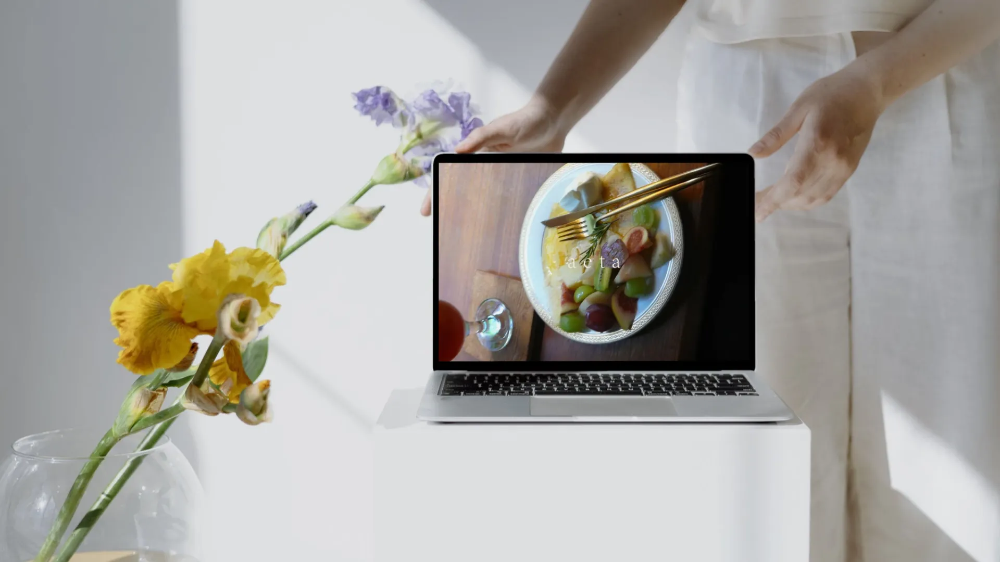
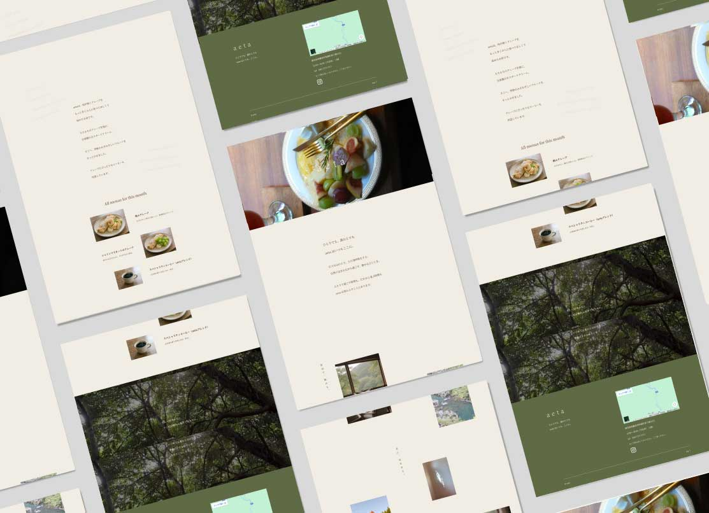
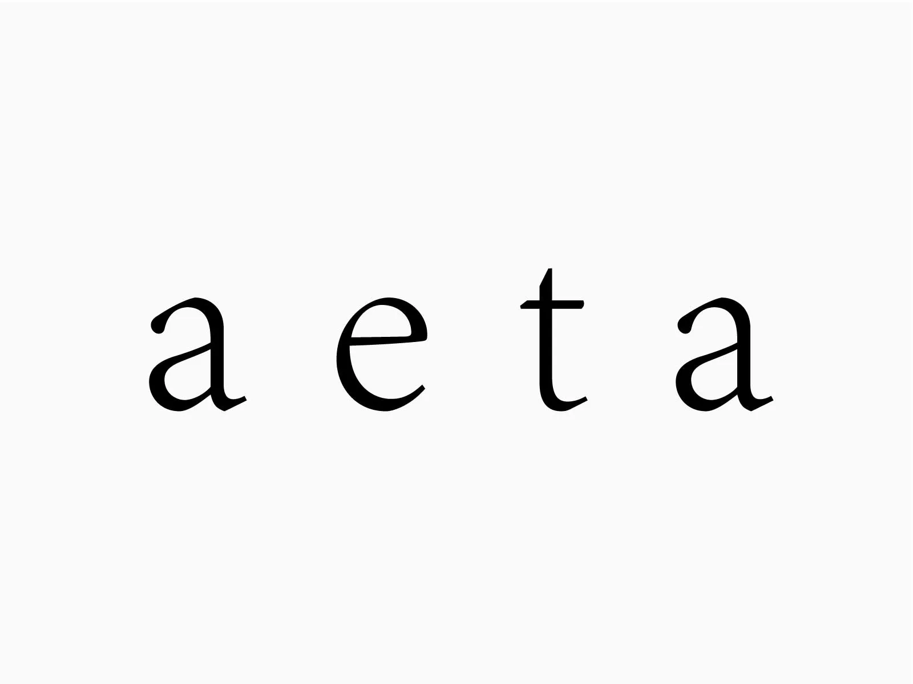
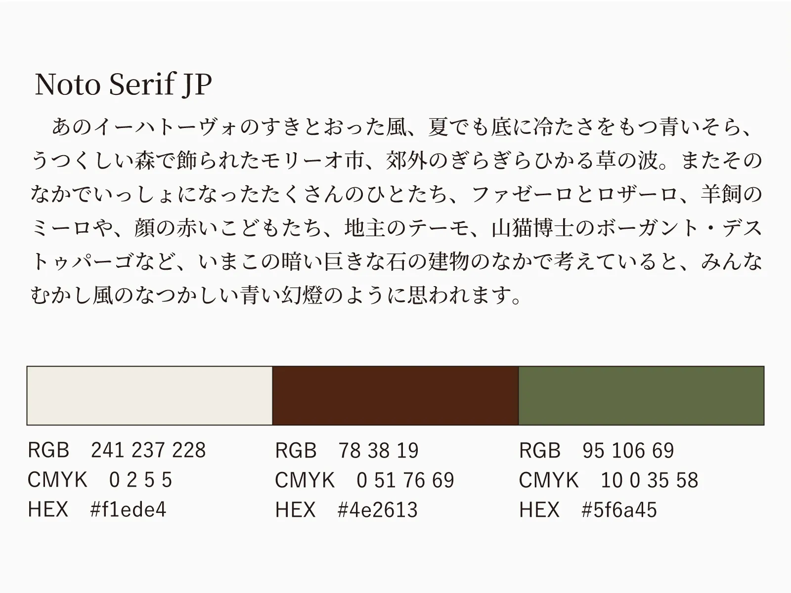
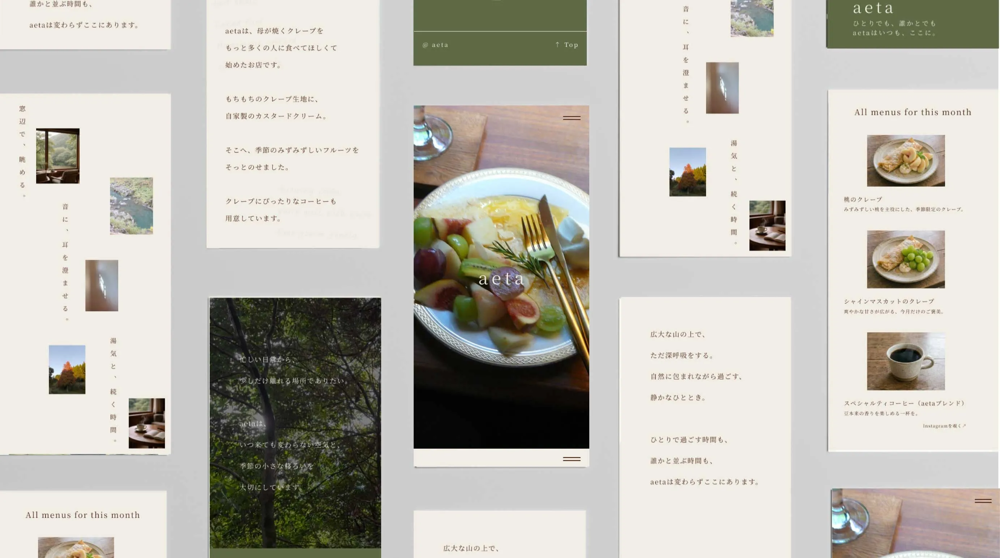

概要
鹿児島県霧島市にあるカフェaeta 様（架空）の公式サイトを制作しました。
「ひとりでも、誰かとでも、aetaはいつもここに。」というメインコピーに沿って、Web上でもカフェにいるような「体験」ができるような情報設計を意識しました。忙しい日常から少し離れ、大自然の中で深呼吸しているような感覚になってもらうため、写真や余白、必要最低限の情報にこだわってデザインしました。心地よさ表現するために、ロゴのフォントやカーニングにも力を入れています。架空サイトのため、情報に一貫性を持たせるよう、ペルソナとカスタマージャーニーマップを作成してからデザインに移りました。


- SNSでの情報発信にとどまり、ブランドとしての世界観が伝わりにくいため、客足が伸び悩んでいる
- メニューや営業情報が散在しており、ユーザーが必要な情報を見つけにくい
- カフェの空気感や世界観をWeb上で体験できる公式サイトをつくる
- メニュー・アクセス・営業情報を一元化し、来店促進につなげる
- 鹿児島市内に住む20代〜40代の女性
- 「日常の小さな豊かさ」を大切にするライフスタイルを持つ人
- 忙しい日々を忘れたい、自然に癒されたいと思っている人


デザイン設計
自然の温かみのあるイメージと洗練された印象を同時に感じてもらえるよう、余白や行間は広めに取り、背景は生成色とモスグリーン、テキストはブラウン、書体はセリフ体を選びました。また、時間の流れや没入感を感じてもらうために、パララックス部分のテキストは縦書きにしました。「自分へのご褒美」としての非日常感や居心地の良さを重視するペルソナ像に訴求するため、実際に行った際の過ごし方が想像しやすく、aetaの雰囲気が伝わる写真を多く掲載しました。
情報設計
ユーザーがaetaの世界観に引き込まれ、カフェにいるような「体験」ができるよう、パララックス効果を取り入れました。また、スクロールするにつれてaetaに近づく感覚になってもらえるように、情報の優先順位を考慮してセクションを配置し、messageの背景を木漏れ日の写真にしました。世界観重視の洗練されたデザインによってユーザーに不安を与えないよう、パララックス部分とmessageセクション以外は、背景に合わせてグローバルメニューの色を変化させ、左上に常に表示するようにしました。

制作の経緯
将来、誰かの心の拠り所となる空間を作りたいという夢があり、「母の手作りスイーツを食べてほしい」という思いと趣味のカフェ巡りから、aetaが生まれました。ネーミングは大学時代に考えていたもので、「あなたとの再会を心から喜びたい」という意味が込められています。こうして、私が作りたい空間の世界観を詰め込んだカフェ aetaのサイトができました。